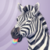
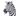
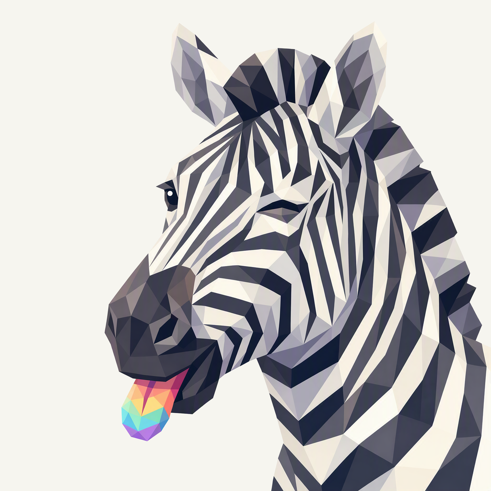
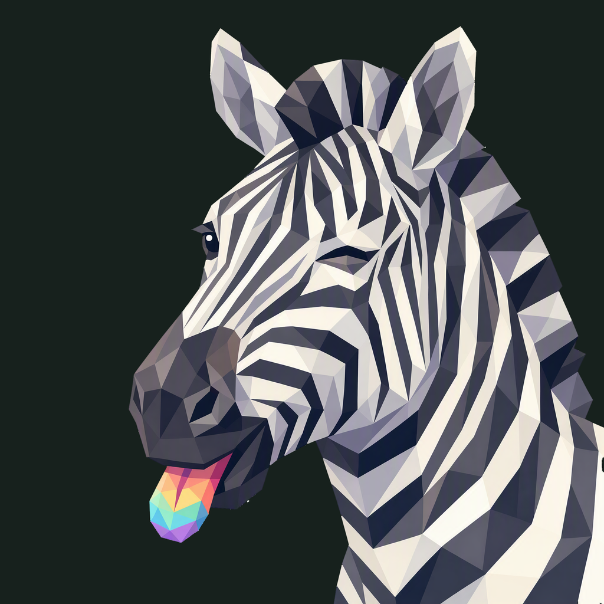

01 / Composition
Just inside the frame
The neck continues through the lower-right boundary. The ears, wink, muzzle, and tongue stay in view, balanced by space toward the upper left.
Animal family · Second family study
The familiar wink, a little rainbow, and a zebra leaning into frame.
Locally adopted · finishing 04
Native 2048 × 2048
01 / Composition
The neck continues through the lower-right boundary. The ears, wink, muzzle, and tongue stay in view, balanced by space toward the upper left.
02 / Drawing
Broad ivory and charcoal planes carry the zebra's anatomy. Smaller shapes describe the familiar wink, dark nose, and little rainbow tongue.
03 / Presentation
Tapered stripes fan through the empty lilac field, echoing the zebra’s markings. Fine light edges and shallow shadows give this individual motif a matte relief.
Presentation tiles at 128/64 px; transparent artwork for sidebar and favicon.


At 16 px the striped silhouette leads. The wink becomes a small dark accent, and the tongue a colored point; individual facets merge. The neck now meets the tile boundary naturally.
The selected lilac field, with neutral and rainbow colors sampled from this zebra.
Select a swatch to copy its hex value. Pew’s existing site primary, #851DED, remains a separate UI color.
One foreground, checked on two contrasting backgrounds.


Azure Foundry · gpt-image-2 · native 2048 × 2048
Loading prompt…


{kind=link}
{kind=link}
{kind=link}
{kind=link}
{kind=link}